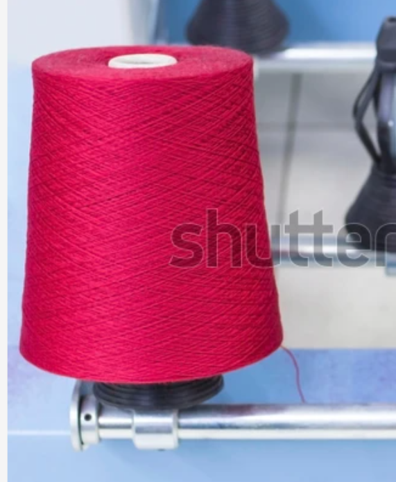
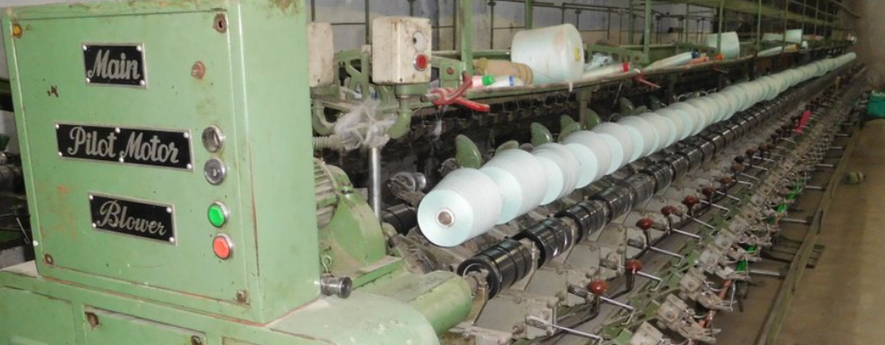
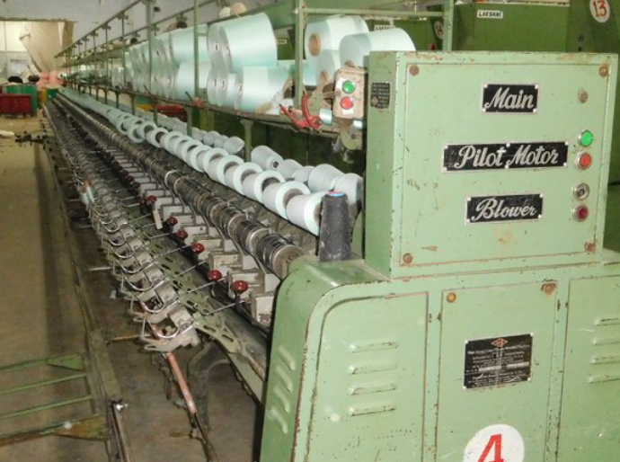

Gallery




Aunshka Textile & Winding Works is a trusted name in yarn winding and re-winding services. We specialize in accurate, efficient and high-quality textile winding solutions.
At Aunshka Textile & Winding Works, we provide reliable and professional yarn winding and re-winding services according to customer requirements. Our goal is to deliver precision, quality and efficiency in every winding process. We ensure proper tension, correct cone weight and consistent finishing for every yarn cone. Customer satisfaction and trusted service are our core values.
We have **20+ years of trusted experience** in the textile winding industry. Over the years we have successfully handled multiple yarn counts and worked with various textile businesses. Our experience helps us maintain production quality and deliver reliable services.



Email : aunshkatextile@gmail.com
Phone : +91 XXXXX XXXXX
Location : Pune, Maharashtra, India